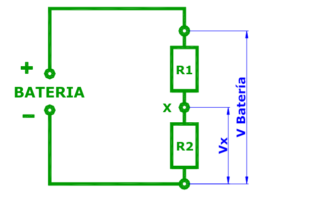
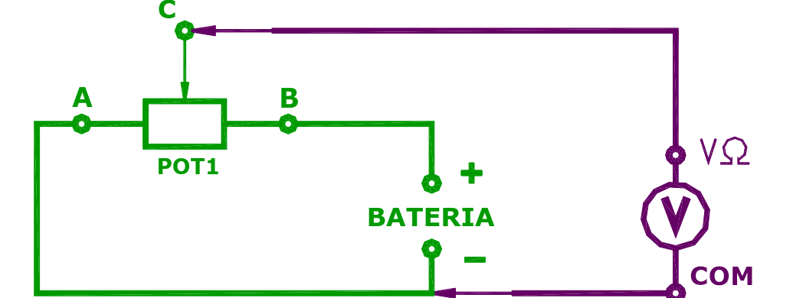
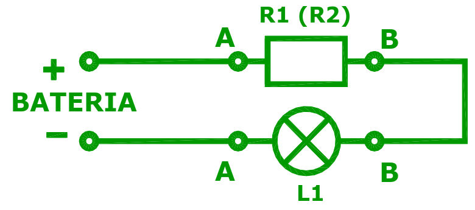
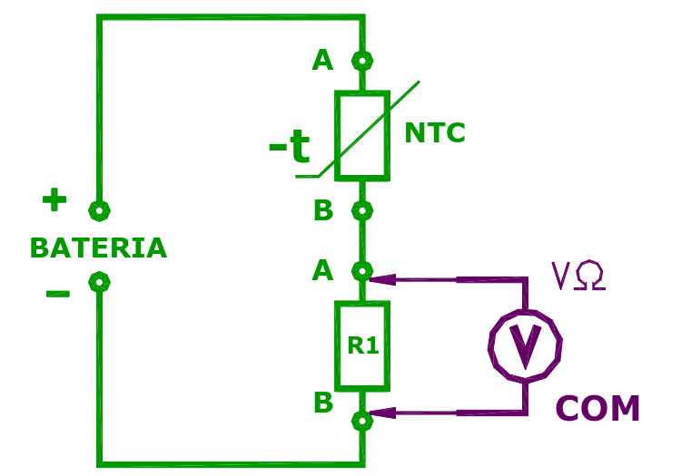
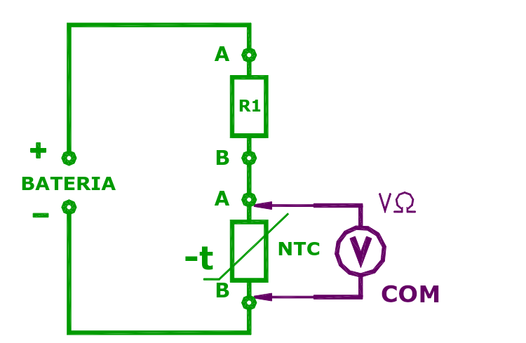

Antes de empezar: la masa es 0 V
Contra qué se miden las tensiones.
Una tensión es siempre una diferencia entre dos puntos. Para no tener que decir cada vez «entre qué y qué», se elige un punto de referencia que vale 0 V.
Para recordar
- Normalmente, a no ser que se indique lo contrario, el terminal negativo (−) de la batería y toda la línea conectada a él se consideran de potencial cero (0 V).
- A esa línea se la llama masa o chasis. En el auto, el chasis está conectado al negativo de la batería.
Entonces, cuando se dice «en el punto X hay 4 V», se entiende «entre el punto X y masa hay 4 V».
El divisor de tensión
Dos resistores en serie para obtener una tensión más chica.
Es muy común, sobre todo en electrónica, necesitar una tensión más chica que la de la batería. Una forma simple de conseguirla es el divisor de tensión resistivo: dos resistores en serie conectados a la batería.

Cómo funciona
No es nada nuevo: es un circuito serie. Por la 2ª regla de Kirchhoff, la tensión de la batería se reparte entre R1 y R2. La tensión VX en el punto medio es justamente la parte que le toca a R2 (la de abajo, la que va a masa).
Como la tensión se reparte en proporción a las resistencias:
VX = VBATERÍA × R2 ÷ (R1 + R2)
La guía lo escribe de otra forma, que dice lo mismo: (R1 + R2) ÷ R2 = VBATERÍA ÷ VX. La resistencia total es a la de abajo lo que la tensión total es a la del punto medio.
Ejemplo: batería de 12 V, R1 = 10 kΩ arriba y R2 = 5 kΩ abajo.
VX = 12 × 5 ÷ (10 + 5) = 12 × 5 ÷ 15 = 4 V
Paso a paso con Ohm: la corriente es 12 V ÷ 15 kΩ = 0,8 mA; sobre R2 caen 0,8 mA × 5 kΩ = 4 V; sobre R1, 0,8 mA × 10 kΩ = 8 V. Y 4 + 8 = 12 ✓
Tres casos que conviene tener a mano
- R1 = R2: VX es exactamente la mitad de la batería.
- R2 mucho más grande que R1: VX queda cerca de la tensión de la batería.
- R2 mucho más chica que R1: VX queda cerca de 0 V.
Para recordar
- Mediante un divisor de tensión, adecuando los valores de los resistores, se pueden obtener distintos valores de tensión menores a los de la fuente.
- La tensión en el punto medio siempre está entre 0 V y la tensión de la batería.
El divisor ajustable: el potenciómetro
Una tensión que se puede variar en forma continua.
Si se necesita una tensión menor a la de la batería pero que se pueda ajustar, se usa un potenciómetro. Sus extremos A y B se conectan a la batería y la tensión se toma del cursor C.

Un potenciómetro es, en realidad, un divisor de tensión cuyos dos resistores son los dos tramos del cuerpo resistivo, a cada lado del cursor. Al mover el cursor, un tramo crece y el otro se achica, y la tensión del cursor cambia:
| Posición del cursor | Tensión en el cursor | Por qué |
|---|---|---|
| En el extremo conectado a masa (−) | 0 V | El cursor toca directamente la masa. |
| En el punto medio | la mitad de VBAT | Los dos tramos son iguales: R1 = R2. |
| En el extremo conectado al + | VBAT completa | El cursor toca directamente el positivo. |
| En cualquier otro punto | un valor intermedio | Proporcional a la resistencia entre cursor y masa. |
Ejemplo: potenciómetro de 10 kΩ alimentado con 5 V. El cursor está en un punto donde entre el cursor y masa hay 3 kΩ.
V = 5 × 3 ÷ 10 = 1,5 V. El cursor está al 30 % del recorrido y la tensión es el 30 % de 5 V.
En el auto: así funciona el sensor de posición de mariposa (TPS) o el del pedal del acelerador. El eje mueve el cursor de un potenciómetro alimentado con 5 V, y la computadora lee la tensión del cursor para saber cuánto está abierto.
Para recordar
- Mediante un divisor de tensión potenciométrico se pueden obtener en forma continua distintos valores de tensión, desde 0 V hasta la tensión de la fuente.
Componentes lineales y no lineales
No todo cumple la Ley de Ohm.
Los resistores comunes tienen un valor prácticamente constante: con cualquier tensión y corriente, la relación V ÷ I da siempre lo mismo. Son componentes que cumplen estrictamente la Ley de Ohm; se los llama lineales.
Otros componentes, por distintas razones, no la cumplen: su resistencia cambia según cómo se los use. Son los componentes no lineales. El ejemplo más simple es una lamparita.

Si se calcula la resistencia de la lámpara (V ÷ I) con distintas tensiones, y después se la mide apagada con el óhmetro, se obtienen valores distintos:
- Con poca tensión el filamento está tibio y su resistencia es más baja.
- Con toda la tensión el filamento está al rojo blanco y su resistencia es mucho más alta.
- Apagada y fría, el óhmetro marca la resistencia más baja de todas.
¿Por qué? Porque la resistencia del metal del filamento (tungsteno) aumenta con la temperatura, y la temperatura del filamento depende de cuánta corriente pasa. En frío, una lámpara de 12 V puede tener una resistencia diez veces menor que encendida. Por eso en el instante de encenderla circula un pico de corriente mucho mayor que el normal, y por eso las lámparas suelen quemarse justo al prenderlas.
Para recordar
- En los componentes no lineales no se puede aplicar la Ley de Ohm de la forma habitual, porque el valor de R no es constante.
- El cálculo V ÷ I da la resistencia en ese momento, con esa tensión, y no sirve para predecir qué pasa con otra tensión.
Termistores: NTC y PTC
Resistores que cambian con la temperatura, a propósito.
Hay componentes no lineales que se fabrican justamente para aprovechar que su resistencia cambia. Los termistores (o termistancias) son resistores cuya resistencia depende de la temperatura. Se usan en aparatos domésticos, en la industria y en el automotor.
NTC: coeficiente de temperatura negativo
NTC viene del inglés Negative Temperature Coefficient. «Negativo» significa que va al revés: cuando la temperatura sube, la resistencia baja, y cuando se enfría, la resistencia vuelve a subir.
Por ejemplo, un NTC típico de auto puede tener unos 2 500 Ω a 20 °C y apenas unos 300 Ω a 80 °C. Ese cambio tan grande lo vuelve ideal para medir temperatura.
Para recordar
- NTC: más temperatura → menos resistencia.
- Los termistores NTC son sumamente adecuados para ser empleados como sensores térmicos: temperatura del refrigerante, del aire de admisión, del aceite.
El NTC dentro de un divisor de tensión
La computadora del auto (ECU) no mide resistencias: mide tensiones. Para «leer» la temperatura, el NTC se conecta en serie con un resistor fijo formando un divisor de tensión. La tensión en el punto medio depende de la resistencia del NTC, que a su vez depende de la temperatura. Así, la temperatura se transforma en tensión.
Según de qué lado se ponga el NTC, la tensión sube o baja con el calor:


NTC arriba: al calentarse, su resistencia baja; entonces se queda con menos tensión y le deja más a R1. La tensión medida sube.
NTC abajo: al calentarse, su resistencia baja; entonces se queda con menos tensión. Como se mide sobre él, la tensión medida baja.
En la mayoría de los autos el sensor de temperatura está conectado como en el segundo caso: la ECU lo alimenta con 5 V a través de un resistor interno, y la tensión del sensor baja a medida que el motor calienta.
Ejemplo: 5 V, resistor fijo de 1 kΩ arriba y NTC abajo.
Motor frío, NTC = 4 kΩ → V = 5 × 4 ÷ (1 + 4) = 4 V.
Motor caliente, NTC = 250 Ω → V = 5 × 250 ÷ 1 250 = 1 V.
Para recordar
- Los termistores NTC asociados a resistores fijos generan una tensión variable que depende de la temperatura del NTC.
- Según cómo se conecten el NTC y el resistor, la tensión sube o baja al aumentar la temperatura.
PTC: coeficiente de temperatura positivo
Eligiendo otra mezcla de óxidos al fabricarlos se obtienen termistores PTC (Positive Temperature Coefficient): cuando la temperatura sube, la resistencia sube, y suele hacerlo de golpe al pasar cierta temperatura.
Esa propiedad los hace útiles como protectores térmicos. Se conecta el PTC en serie con un motor o una electroválvula. Mientras todo funciona bien, el PTC está frío, tiene poca resistencia y deja pasar la corriente normal. Si el motor se traba o se recalienta, el PTC se calienta, su resistencia sube mucho, y la corriente baja casi a cero: el circuito queda protegido sin que se queme nada. Al enfriarse, vuelve a funcionar solo.
Para recordar
- PTC: más temperatura → más resistencia.
- Los termistores PTC son sumamente adecuados para ser empleados como protectores térmicos de motores, electroválvulas, etc.
| NTC | PTC | |
|---|---|---|
| Nombre | Negative Temperature Coefficient | Positive Temperature Coefficient |
| Al calentarse | La resistencia baja | La resistencia sube |
| Uso típico | Sensor de temperatura | Protector térmico |
| En el auto | Temperatura de refrigerante, aire, aceite | Protección de motores (levantavidrios, limpiaparabrisas) y electroválvulas |
Ejercicios
Escribí el resultado en la unidad que pide cada consigna y comprobá.